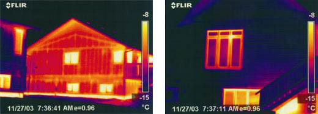
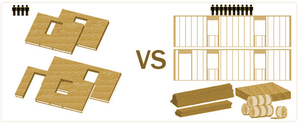

Wall and Roof Systems: Structural Advantages: SIPs are stronger than stick framing due in part to having dual shear panels vs. one-sided on stick framing. SIPs have undergone exhaustive testing by third-party testing firms. The National Evaluation Service, Inc., is the BOCA, ICBO, and SBCCI code authority. In the real world, SIP houses have survived earthquakes and hurricanes when the stick-built houses around them were destroyed.
Testing done in October 2000 using a standard framed home made of 2x6 construction vs a 61⁄2" EPS Core had results indicating that the 61⁄2" panel rating is over 40% more efficient than 2x6 constructed home. Also, tests show that the 2x6 framed construction using R-19 batt insulation has a reduced R-rating of R-14 in real life. Much of the energy loss is due to stud placing at 16" on centers, creating thermal breaks in the framed wall system.
The University of Oregon conducted extensive tests on SIP panels. They monitored the labor required to erect one of these structures as well as its energy performance. They found that their SIP house was completed in 161 fewer hours compared with industry standards for a stick-framed house and that the SIP house required 34% less on-site construction time.
The fact that SIP structures can be effectively built by unskilled labor has resulted in the increased use of SIPs by Habitat for Humanity International, a nonprofit organization that produces affordable housing using mostly volunteer labor, which has more than 1,200 affiliates in the United States. Some of these affiliates use SIPs for their affordable housing projects not only because of the quick construction but also because the energy efficiency means that the occupants will be better able to heat and cool their homes in economically tight situations.
